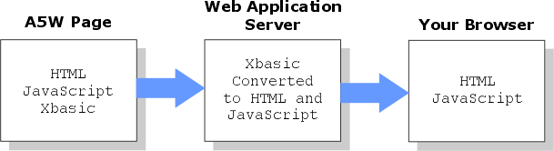

How Pages are Rendered
Perhaps you wonder what happens to the Xbasic code that you put into an A5W page. Perhaps you ask yourself, "How does the browser know what to do with Xbasic?". The answer is that the Application Server processes the Xbasic code and replaces it with standard HTML and JavaScript.

The result is that your browser is processing and displaying perfectly HTML and JavaScript code.
Xbasic is quite similar to Microsoft's Visual Basic and shares many of its language elements and functions. However, Xbasic has many additional and different features. Notably, Xbasic is designed to make the process of developing database application easier. Many commonplace tasks that would take many lines of code in another language take only a single line in Xbasic.
Xbasic has thousands of functions and methods available for your use. Your primary references should be:
Reference | Description |
An overview of what you can do with web publishing. | |
An overview of what you can do with grid components. | |
An overview of what you can do with dialog components. | |
An index into descriptions of Xbasic's language elements. | |
A technical reference for the Application Server. | |
Xbasic programming concepts and reference | |
Given a function's name, find out how to use it. | |
Given a method's name, find out how to use it. | |
Given a task to perform, find a function or method that does it. | |
A list of functions and methods used in advanced Internet applications. |
Where to Place Your Xbasic Code
You should place your Xbasic code within the body of the A5W page. You simply place the Xbasic code where you need it. For example, you dimension a local variable when the page begins, because it will be needed inside the page:
<html> <head> <title>How Pages are Rendered</title> </head> <body> ... <%a5 dim TextSize as N %> ... </body> </html> |
You can place Xbasic code inside of tags. In this case the <font size= > command needs a numerical argument. The Application Server evaluates the TextSize variable and inserts a number.
<font size= <%a5 ? TextSize %> >Hello and Welcome<br></font> |
You can place Xbasic between tags. In this case the Application Server is generating seven copies of the text string Hello and Welcome<br>.
<center> <%a5 for TextSize = 1 to 7 %> ? "Hello and Welcome<br>" <%a5 next TextSize %> </center> |
As you have seen, the Xbasic code in an A5W page can be placed anywhere inside the HTML code of the page.
How does the Application Server recognize the Xbasic code that it must process, yet ignore whatever HTML or JavaScript code the page might also contain?
<%a5 for TextSize = 1 to 7 %> |
The answer is that each piece of Xbasic code is preceded and ended with unique identifying tags. The character sequence <%a5 comes first. Then, you may have one or more lines of Xbasic. The Xbasic code could be as Little as one or two words that invoke a function. Finally, %> comes last, indicating that the following code will be ordinary HTML.
<%a5 dim row as N dim col as N for row = 1 to 8 for col = 1 to 4 ... do something next col next row %> |
Inserting Data into the HTML Code Stream
If you want to use the Xbasic to generate HTML content: a tag, some text, or a parameter value, then you use the question mark "?" operator.
dim gv8,4 as N <table> <%a5 dim row as N dim col as N for row = 1 to 8 ? "<tr>" for col = 1 to 4 ? "<td>" + gvrow,col + "</td>" next col ? "</tr>" next row %> </table> |
As you can see by this example, you may have multiple ? operators between the <%a5 and %> tags. You must surround text elements, such as <td> with quotes.
See Also